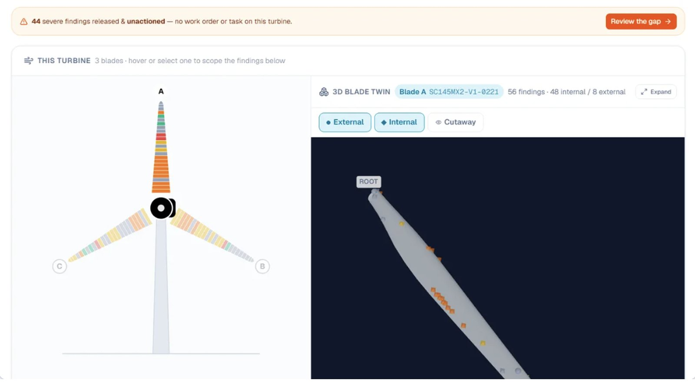
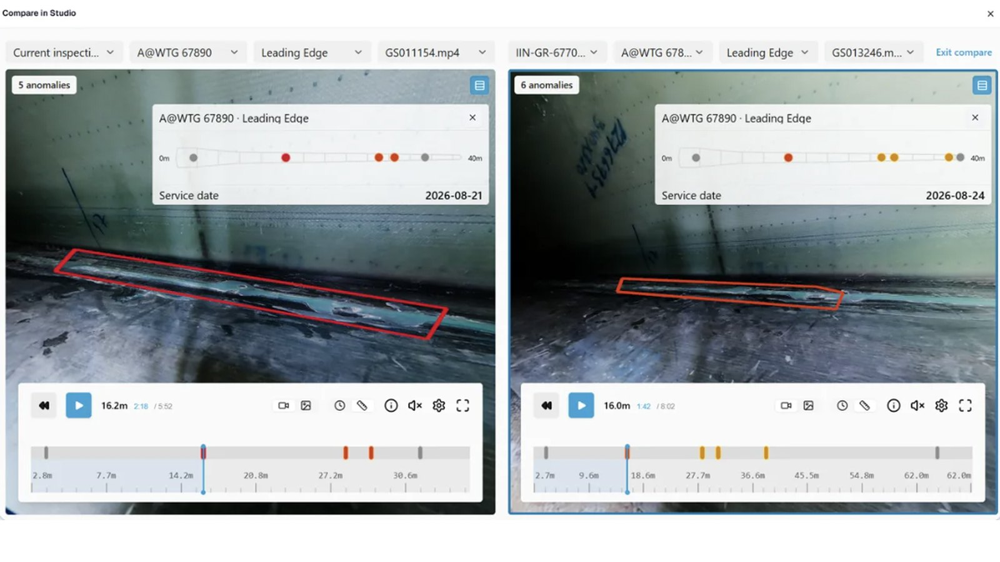
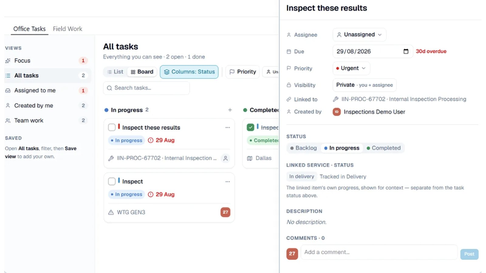
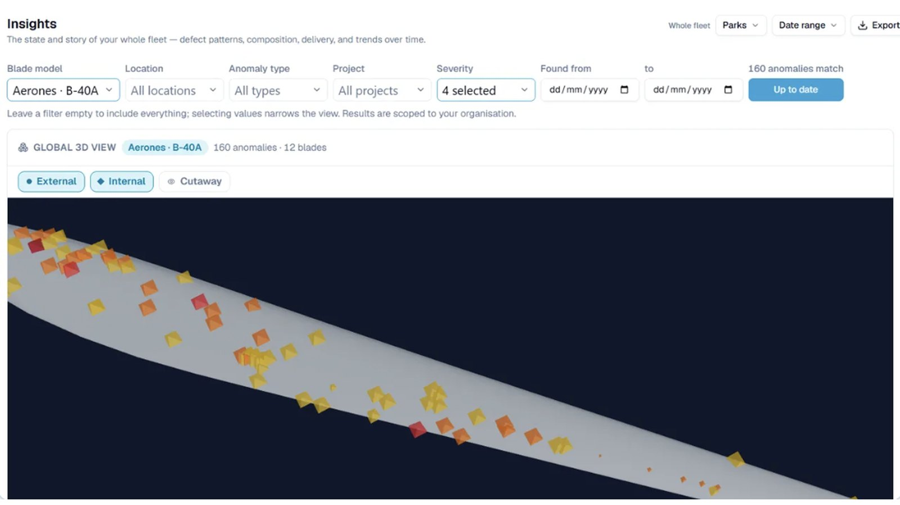

Every blade finding, from inspection to repair, in one portal.
Naventiq is the Aerones customer portal for wind-turbine owners and operators. Review anomalies, compare inspections over time, plan field work with your vendors and see where damage clusters across your whole fleet.
Operations teams see what finished in the field and what is in progress. Engineers see the assets and anomalies that need attention. Everyone works from the same data.
A home page that opens where you left it
Home has two focuses. Operations shows what finished in the field yesterday and what is being worked on today. Engineering puts the assets and anomalies that need attention in front of you.
It remembers your last focus on any device. Severity 5 anomalies are one click away, and a completed service can go to a colleague for review without leaving the page.
OperationsEngineering
Finished yesterday
In progress today
Anomalies, at the speed you read them
Arrow keys move through the list. A side drawer opens the full picture of a finding beside it, and single keys act on it without leaving the row.
RMark reviewed
CMark confirmed
TCreate a task
WPlan a service
The same finding from earlier inspections is one click away, and Compare puts raw service material side by side, internal and external, so you can see how a defect actually developed.
Turn findings into work, and follow it out
Office tasks are the to-dos inside the portal. Ask a colleague to go through a set of service results, assign it, and see where it stands.
Field work is the job on the turbine. Create a planning service straight from anomalies, or from turbines and blades, assign a vendor, hand items to their technicians and follow each one through to execution.
The Global 3D view pools one blade model’s findings from across your whole fleet. Choose the model, the finding types and the dates, and every service lands on a single blade, so you see where damage clusters.
Each inspection service page carries the same 3D blade for that one service, with external, internal and cutaway views.
Illustration: findings from every service of one blade model, on a single blade.
A closer look, screen by screen
Four views from the live portal. Pick one, or let them play through.




One sidebar for your whole fleet
Eight main sections, in the order you meet them.
Home
Your starting point, in the focus you choose: Operations or Engineering.
Assets
Your fleet, from wind-farm locations down to individual turbines and blades.
Findings
Every anomaly found on your blades. Review and act on them, and build your own views with filters and columns.
Projects
All your service projects in one list, with scope, status and progress.
Planning
Office tasks inside the portal, and field work on the turbines ahead.
Delivery
Inspection reports, completed services and billing. Generate custom reports for chosen turbines, locations or projects.
Insights
Fleet-wide analytics to spot trends across turbines and blades and plan maintenance.
Access control
Invite colleagues and set what each role can see and do, without waiting on us.
See Naventiq on a fleet like yours
Book a live walkthrough with the Aerones team. We will show how findings, planning and the 3D blade view fit your inspection programme, and answer your questions.